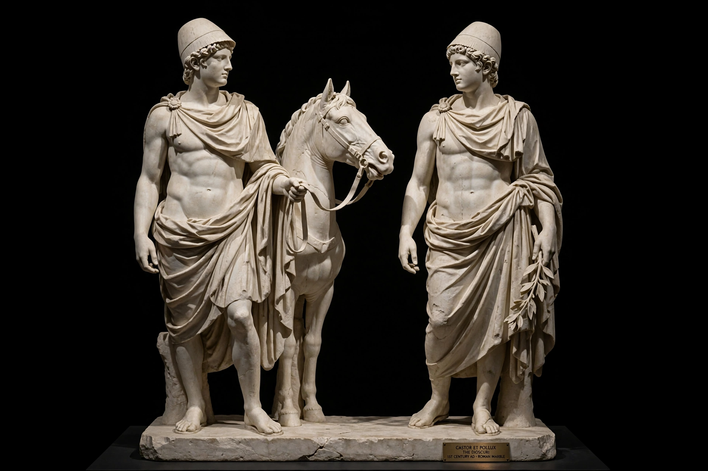

DioscuriCastor and Pollux (or Polydeuces) are twin half-brothers in Greek and Roman mythology, known together as the Dioscuri. Their mother was Leda; Castor was the mortal son of Tyndareus, king of Sparta, while Pollux was the divine son of Zeus, who seduced Leda in the form of a swan. They are the stars of the constellation Gemini.
The twins were famed horsemen and hunters who participated in the hunt for the Calydonian Boar and sailed with Jason as Argonauts. Pollux was a superb boxer; Castor excelled with horses. They rescued their sister Helen when Theseus abducted her.
After Castor was killed in a cattle-raid feud with Idas and Lynceus, Pollux begged Zeus not to be separated from his brother. Zeus allowed them to share immortality, alternating between Olympus and Hades, and placed them in the sky as Gemini.
The Dioscuri were patron gods of sailors, appearing as St. Elmo's fire, and were revered at Sparta and in Rome, where their temple stood in the Forum and their intervention was credited at the Battle of Lake Regillus (496 BC).